Projection results
Projected emissions trajectories diverge significantly across the three scenarios, despite all beginning from the same 2025 net emissions level of 401.05 Mt CO₂‑e. In the Ampol‑1p5DS (1.5°C‑aligned pathway), cumulative measures across sectors reduce annual emissions by 472.53 Mt CO₂‑e relative to 2025, driving the system to net‑negative emissions by 2050. Ampol‑2p5DS (2.5°C pathway) delivers a 397.51 Mt CO₂‑e reduction, bringing emissions close to net zero. By contrast, the Ampol‑House‑View (reference/baseline scenario) achieves a more modest 195.63 Mt CO₂‑e reduction, with residual emissions still representing around half of the 2025 level.
Across all scenarios, Power Generation is the single largest source of abatement, contributing around 129 Mt CO₂‑e of reductions by 2050. In Ampol‑1p5DS, substantial additional cuts arise from Industry (‑109.74 Mt CO₂‑e) and Transport (‑94.07 Mt CO₂‑e), consistent with deep electrification and efficiency improvements. Ampol‑2p5DS relies more heavily on Land Use (‑101.06 Mt CO₂‑e) alongside Industry (‑97.01 Mt CO₂‑e), while the Ampol‑House‑View features a net increase in Land Use emissions (+33.58 Mt CO₂‑e), partially offsetting reductions in Power Generation (‑127.83 Mt CO₂‑e) and Industry (‑72.37 Mt CO₂‑e). These patterns underscore the importance of both energy‑system decarbonisation and land‑sector performance in meeting long‑term climate objectives.
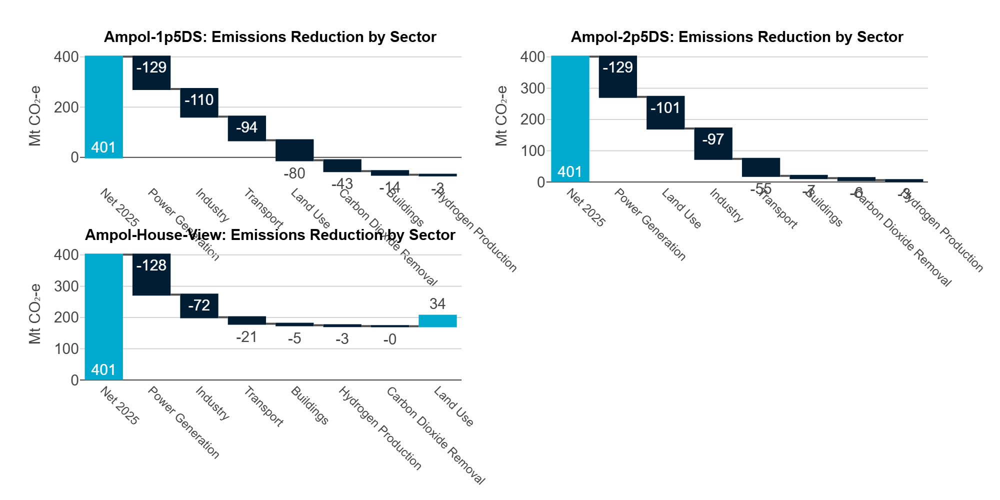
Figure: Sectoral contributions to emissions reductions from 2025 to 2050 under each scenario, relative to a 2025 baseline of 401.05 Mt CO₂‑e.
The time‑path of net emissions reflects these sectoral contributions. Under Ampol‑1p5DS, total net emissions fall from 401.05 Mt CO₂‑e in 2025 to ‑71.48 Mt CO₂‑e in 2050, a 117.8% reduction that implies net carbon removals at mid‑century. Ampol‑2p5DS delivers a 99.1% reduction over the same period, with 2050 net emissions of 3.52 Mt CO₂‑e, broadly consistent with an economy at or near net zero. The Ampol‑House‑View shows a slower decline, reaching 205.41 Mt CO₂‑e by 2050 (‑48.8% versus 2025). Consequently, by 2050 the reference/baseline scenario is 276.9 Mt CO₂‑e higher than the Ampol‑1p5DS pathway, highlighting the scale of additional effort required beyond current‑trajectory settings. The evolution of sectoral profiles and the relative roles of industry, transport, buildings and land use within these totals are examined in more detail in subsequent sectoral sections.

Figure: Projected net emissions by sector from 2025 to 2050, showing aggregate trajectories and progress toward (or beyond) net zero under each scenario.
Decarbonisation is closely linked to increased electricity demand as end‑use sectors electrify. From a starting point of 355.36 TWh in 2025, total electricity consumption in Ampol‑1p5DS almost triples to 1,019.51 TWh in 2050, an increase of 186.9%. Ampol‑2p5DS shows a 119.7% rise to 780.55 TWh, while electricity use in the Ampol‑House‑View grows by 102.5% to 719.75 TWh. By 2050, electricity consumption in the 1.5°C‑aligned pathway is 299.8 TWh higher than in the reference/baseline scenario, reflecting greater electrification of transport, industry and buildings, as well as additional demand from emerging loads such as hydrogen production and direct air capture. The interplay between this rising electricity demand and the decarbonisation of power supply is addressed in the dedicated power‑sector analysis.
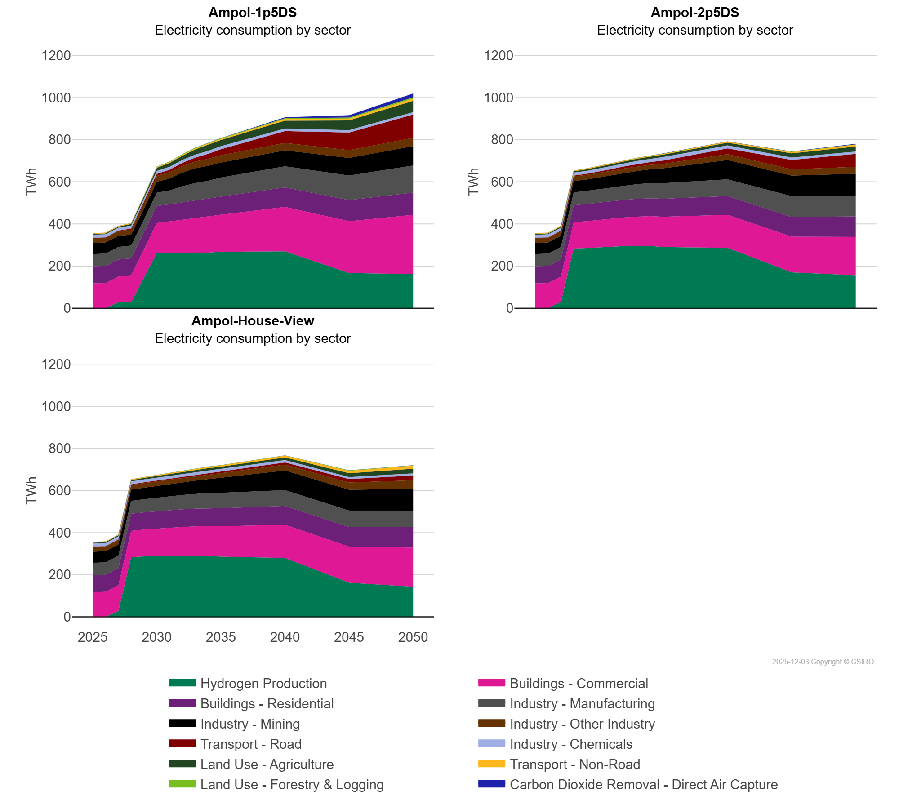
Figure: Projected electricity consumption by sector from 2025 to 2050, illustrating the stronger electrification trend under the more ambitious climate pathways.
Emissions
Total national emissions across all sectors are projected to decline from 401.05 Mt CO₂-e in 2025 under all scenarios, but the scale of reduction diverges markedly by 2050. In the Ampol-1p5DS (1.5°C-aligned pathway), net emissions fall by 117.8% to –71.48 Mt CO₂-e in 2050, implying a net‑negative system supported by substantial land-use sequestration and carbon dioxide removal. The Ampol-2p5DS (2.5°C pathway) almost fully decarbonises, reaching 3.52 Mt CO₂-e in 2050 (a 99.1% reduction). By contrast, the Ampol-House-View (reference/baseline scenario) reduces emissions by only 48.8%, leaving 205.41 Mt CO₂-e in 2050. By that date, total emissions in the reference/baseline scenario are 276.9 Mt CO₂-e higher than in the 1.5°C-aligned pathway.
Figure: Projected net emissions by major sector from 2025 to 2050 under the three scenarios, showing the pace and depth of decarbonisation.
From a sectoral perspective, all pathways start from the same 2025 baseline of 401.05 Mt CO₂-e, but the composition of reductions differs. Power Generation delivers the single largest abatement contribution in every case, at around 129 Mt CO₂-e of reductions relative to 2025. In the Ampol-1p5DS, this is complemented by major cuts from Industry (–109.74 Mt CO₂-e) and Transport (–94.07 Mt CO₂-e), with additional contributions from land use and engineered removals to reach a total reduction of –472.53 Mt CO₂-e by 2050. The Ampol-2p5DS also relies on power decarbonisation but leans more heavily on Land Use (–101.06 Mt CO₂-e) and slightly less on industry and transport (–97.01 and –55 Mt CO₂-e respectively), for a total reduction of –397.51 Mt CO₂-e. In the Ampol-House-View, reductions are smaller and more concentrated in power (–127.83 Mt CO₂-e) and industry (–72.37 Mt CO₂-e), while Land Use becomes a net source, increasing emissions by 33.58 Mt CO₂-e and materially limiting overall progress (net reduction –195.63 Mt CO₂-e).
Figure: Cumulative change in emissions from 2025 to 2050 by sector, highlighting the relative contribution of power, industry, transport, buildings, hydrogen and land use in each scenario.
Decarbonisation of electricity generation is rapid in all scenarios, underpinning emissions reductions in end‑use sectors discussed elsewhere in this report. Emissions from electricity fall from 129.87 Mt CO₂-e in 2025 to 0.94 Mt CO₂-e in 2050 in the Ampol-1p5DS and 0.95 Mt CO₂-e in the Ampol-2p5DS, a 99.3% decline in both cases. Even in the Ampol-House-View, electricity emissions decline by 98.4% to 2.04 Mt CO₂-e by 2050. Residual power‑sector emissions are therefore very small compared with other sources and are mainly relevant for achieving net‑negative outcomes in the 1.5°C-aligned pathway.
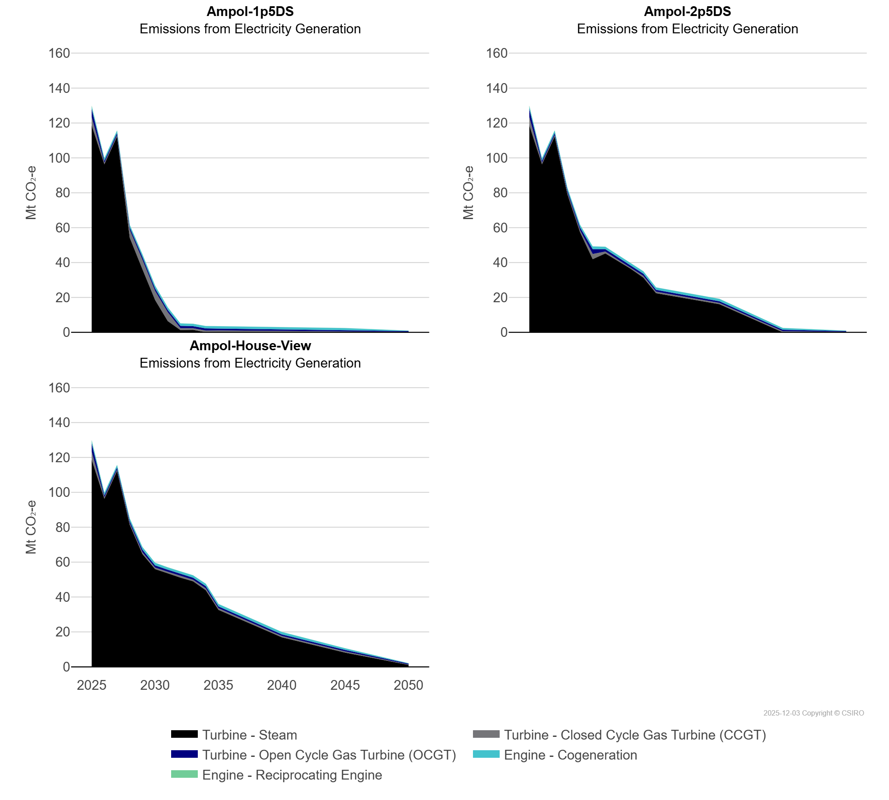
Figure: Emissions from electricity generation by technology type from 2025 to 2050, showing near‑complete decarbonisation of the power sector in all scenarios.
In domestic transport, however, the divergence between pathways is substantial. Starting from 98.07 Mt CO₂-e in 2025, emissions in the Ampol-1p5DS decrease by 95.9% to 4.0 Mt CO₂-e in 2050, reflecting deep electrification and efficiency improvements across passenger vehicles, commercial vehicles, heavy freight and aviation. Under the Ampol-2p5DS, transport emissions fall by 55.7% to 43.42 Mt CO₂-e, leaving a sizeable residual. The Ampol-House-View shows only a 21.4% reduction, with 77.06 Mt CO₂-e remaining in 2050. By that year, domestic transport emissions in the reference/baseline scenario are 73.1 Mt CO₂-e higher than in the 1.5°C-aligned pathway, making transport the single largest contributor to the gap between scenarios.
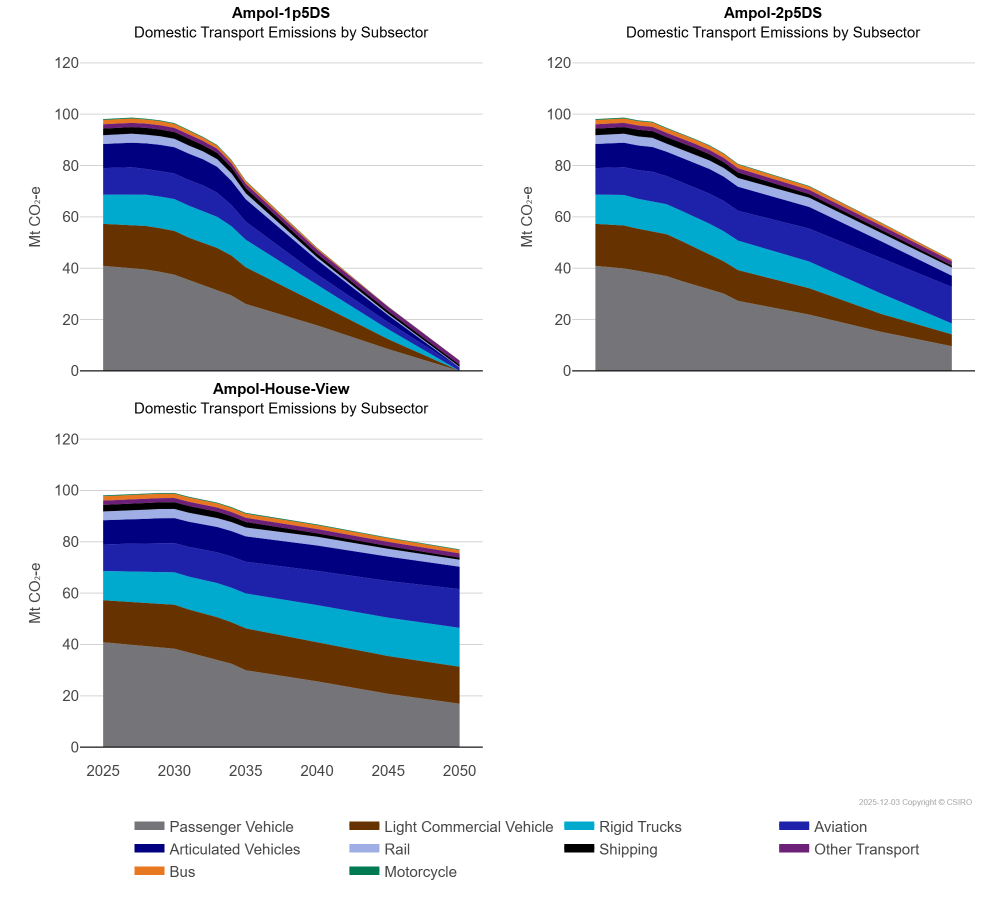
Figure: Domestic transport emissions by subsector (e.g. passenger vehicles, freight, aviation) illustrating the contrasting depth of decarbonisation across scenarios.
Emissions from the built environment (residential and commercial buildings) also show strongly scenario‑dependent outcomes. In 2025, building emissions total 14.25 Mt CO₂-e. In the Ampol-1p5DS, these are fully eliminated by 2050 (–100.0%), consistent with near‑total electrification and high building efficiency. The Ampol-2p5DS achieves a 49.3% reduction to 7.22 Mt CO₂-e, while the Ampol-House-View delivers only a 34.6% reduction, with 9.32 Mt CO₂-e remaining in 2050. Consequently, 2050 building emissions in the reference/baseline scenario are 9.3 Mt CO₂-e higher than in the 1.5°C-aligned pathway, adding to the residual emissions gap.
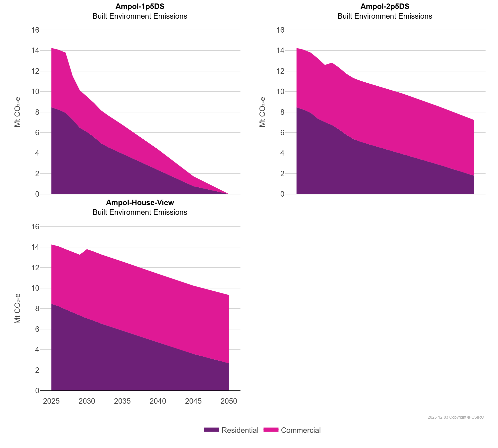
Figure: Residential and commercial building emissions projections, highlighting complete abatement in the 1.5°C-aligned pathway versus partial reductions in the other scenarios.
Overall, the projections indicate that while power-sector decarbonisation proceeds rapidly in all scenarios, achieving deep economy‑wide emissions reductions consistent with a 1.5°C outcome depends critically on accelerated abatement in transport, buildings, industry, and land use, supported by both natural sequestration and engineered carbon dioxide removal.
Electricity generation
Electricity generation grows rapidly across all scenarios, driven by economy-wide electrification and the shift away from direct fossil fuel use. Total generation rises from 266.2 TWh in 2025 to 1,095.0 TWh in 2050 in Ampol‑House‑View (a 311% increase). The transition scenarios require even higher output, with Ampol‑2p5DS reaching 1,346.9 TWh (+406%) and Ampol‑1p5DS reaching 1,472.4 TWh (+453%) by 2050. By 2050, generation in Ampol‑1p5DS is 377.4 TWh above Ampol‑House‑View, reflecting stronger electrification and earlier fuel switching in end‑use sectors.

Figure: Projected electricity generation by technology, showing rapid growth in total output and the increasing dominance of wind and solar across all scenarios.
Meeting this growth in demand requires a substantial expansion of installed capacity. System capacity rises from 110.4 GW in 2025 to 559.4 GW by 2050 in Ampol‑House‑View (+407%). The low‑carbon pathways again require more capacity, with Ampol‑2p5DS reaching 625.4 GW (+466%) and Ampol‑1p5DS 719.7 GW (+552%) by 2050. Ampol‑1p5DS therefore has 160.4 GW more capacity than the reference in 2050. The additional capacity is almost entirely from variable renewables—primarily wind and large‑scale solar—while fossil steam plant contracts materially, leaving a smaller role for flexible gas and cogeneration assets.

Figure: Installed generation capacity by technology and fuel, highlighting the build‑out of wind and solar and the relative decline of coal‑fired steam plant.
The generation mix becomes overwhelmingly renewable. Across all scenarios, the renewable share increases from around 38% in 2025 to almost 100% by 2050. In Ampol‑1p5DS the renewable fraction rises from 37.9% to 99.8%, with a very similar trajectory in Ampol‑2p5DS (99.8% in 2050). Ampol‑House‑View also approaches full renewable supply, reaching 99.7% by 2050, slightly below the transition pathways. Differences between scenarios are concentrated in the pace of change rather than the long‑term endpoint.
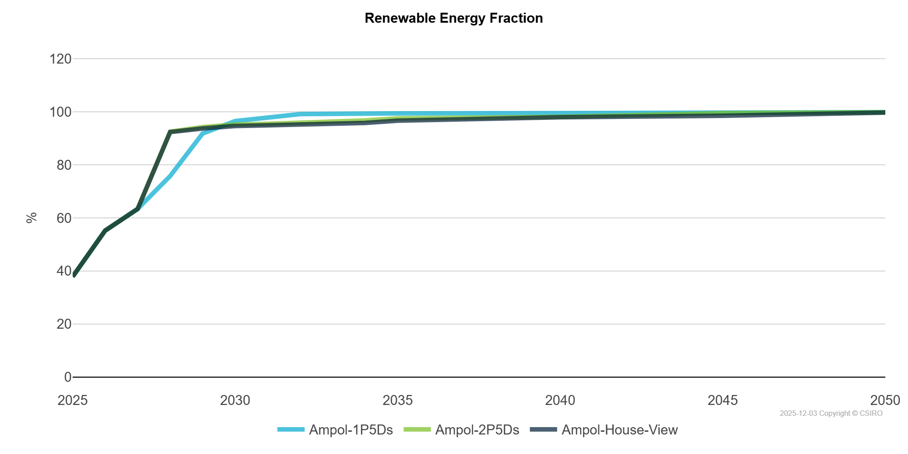
Figure: Renewable share of total electricity generation, indicating convergence to an almost fully renewable system across all scenarios.
Consistent with this transformation, the average emissions intensity of grid electricity falls sharply. In 2025, generation emissions intensity is around 0.51 Mt CO₂‑e/TWh across all scenarios. This declines rapidly through the 2030s as coal is phased down and gas generation is displaced or abated, reaching zero by 2050 in Ampol‑1p5DS, Ampol‑2p5DS and Ampol‑House‑View. Electricity supply is therefore effectively decarbonised across all cases, with residual sectoral emissions addressed through other measures discussed elsewhere in this report.

Figure: Average emissions intensity of electricity generation, showing a decline to zero by 2050 in all scenarios as fossil generation is phased out.
High levels of variable renewable generation necessitate a large expansion of storage to maintain reliability and system flexibility. Total storage capacity (batteries plus hydro storage) increases from 4.3 GW in 2025 to 38.3 GW in 2050 in Ampol‑House‑View (+785%). In Ampol‑2p5DS, storage grows to 48.6 GW (+1,021%), while Ampol‑1p5DS reaches 71.8 GW (+1,558%), some 33.5 GW above the reference scenario in 2050. Utility‑scale batteries provide the bulk of this capacity, complemented by significant growth in residential and commercial batteries, supporting greater utilisation of distributed solar and reinforcing the role of electricity as the central decarbonisation vector.
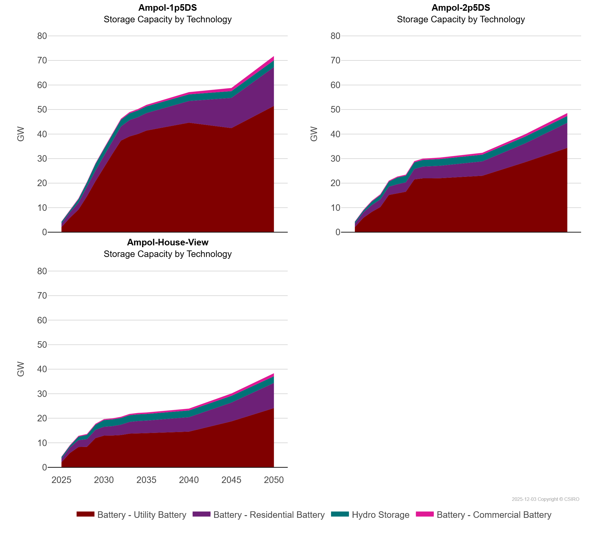
Figure: Installed storage capacity by technology, with strong growth in utility‑scale, residential and commercial batteries required to integrate high shares of variable renewables.
Energy consumption by sector
Electricity demand grows strongly across all scenarios, driven by electrification of end‑uses and the emergence of new electricity-based energy carriers. Total electricity consumption increases from 355.36 TWh in 2025 to 1,019.51 TWh by 2050 under Ampol‑1p5DS (1.5°C‑aligned pathway), a rise of 186.9%. In the Ampol‑2p5DS (2.5°C pathway) and Ampol‑House‑View (reference/baseline scenario), electricity use also more than doubles over the projection period, reaching 780.55 TWh (+119.7%) and 719.75 TWh (+102.5%) respectively. By 2050, total electricity consumption in Ampol‑1p5DS is 299.8 TWh higher than in Ampol‑House‑View, reflecting more extensive electrification, particularly in hydrogen production, transport and buildings, and additional demand from emerging technologies such as direct air capture.
Figure: Projected electricity consumption by sector from 2025 to 2050 under the Ampol‑1p5DS, Ampol‑2p5DS and Ampol‑House‑View scenarios, showing increasing electricity use across most sectors and the strongest growth in the 1.5°C‑aligned pathway.
In contrast, total final energy use in industry declines in all scenarios as energy efficiency improves and fossil fuel use is reduced. Aggregate industrial energy consumption falls from 1,555.51 PJ in 2025 to 1,179.22 PJ in 2050 in Ampol‑1p5DS (‑24.2%) and to 1,089.19 PJ in Ampol‑2p5DS (‑30.0%). The Ampol‑House‑View shows a similar reduction to 1,164.28 PJ (‑25.2%). By 2050, industrial energy use in Ampol‑1p5DS is 90.0 PJ higher than in Ampol‑2p5DS, indicating that deeper decarbonisation in the 1.5°C‑aligned pathway entails greater substitution towards electricity, hydrogen and other low‑emissions fuels, partly offsetting the energy savings from efficiency and structural change. These shifts in the industrial fuel mix underpin the emissions trajectories discussed elsewhere in the projection results.
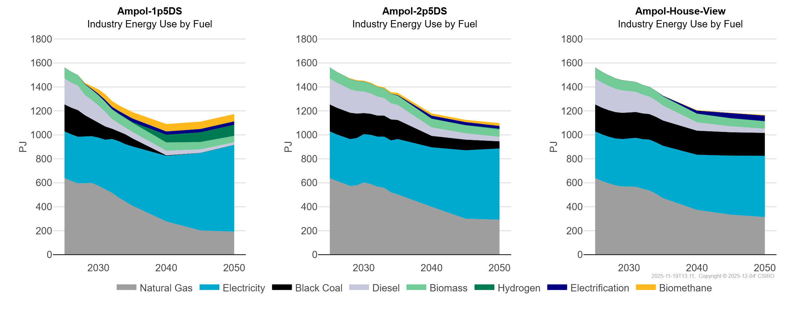
Figure: Projected industrial energy consumption by fuel from 2025 to 2050 under the Ampol‑1p5DS, Ampol‑2p5DS and Ampol‑House‑View scenarios, illustrating declining total energy use and a transition away from fossil fuels towards electricity and low‑emissions fuels.
Overall
Across all scenarios, total electricity consumption more than doubles from 2025 to 2050, underscoring the central role of electrification in the energy transition. From a common 2025 baseline of 355.36 TWh, electricity demand reaches 719.75 TWh in Ampol-House-View (reference/baseline scenario), 780.55 TWh in Ampol-2p5DS (2.5°C pathway), and 1,019.51 TWh in Ampol-1p5DS (1.5°C-aligned pathway) by 2050. This corresponds to growth of 102.5%, 119.7% and 186.9% respectively, with the 1.5°C-aligned pathway requiring around 300 TWh more electricity in 2050 than the reference case, driven by deeper electrification in transport, industry and new loads such as hydrogen production and carbon dioxide removal.
Figure: Projected electricity consumption by sector from 2025 to 2050 under the three scenarios, showing substantially higher demand in the more ambitious decarbonisation pathways.
Despite this strong growth in electricity use, net emissions decline sharply in the decarbonisation scenarios. All pathways start from the same 2025 baseline of 401.05 Mt CO₂-e. By 2050, Ampol-1p5DS delivers net-negative emissions of −71.48 Mt CO₂-e (a 117.8% reduction relative to 2025), while Ampol-2p5DS almost fully decarbonises to 3.52 Mt CO₂-e (a 99.1% reduction). In contrast, Ampol-House-View reduces emissions only to 205.41 Mt CO₂-e, a 48.8% reduction, leaving 205 Mt CO₂-e of residual emissions in 2050—around 277 Mt CO₂-e higher than the 1.5°C-aligned pathway. This indicates that achieving higher climate ambition requires not only increased electrification but also a rapid shift to low‑emissions electricity supply and complementary abatement in non‑power sectors.
Figure: Net emissions trajectories by sector for each scenario, highlighting the progression from positive to net‑negative emissions in the 1.5°C‑aligned pathway.
Sectoral contributions to emissions reduction further illustrate the scale of system change implied by the higher-ambition pathways. From the 2025 baseline of 401.05 Mt CO₂-e, Ampol-1p5DS achieves the deepest total cut (−472.53 Mt CO₂-e), followed by Ampol-2p5DS (−397.51 Mt CO₂-e) and Ampol-House-View (−195.63 Mt CO₂-e). Power Generation is the single largest source of abatement in all scenarios, delivering about 129 Mt CO₂-e of reductions, with substantial additional cuts from Industry and Transport. Land Use acts as a significant sink in Ampol-2p5DS (−101.06 Mt CO₂-e) and Ampol-1p5DS, but becomes a net source in Ampol-House-View, where Land Use emissions increase by 33.58 Mt CO₂-e. Overall, the projections show that higher electricity consumption is compatible with deep emissions reductions, provided that the power system decarbonises rapidly and that industry, transport and land sectors deliver sustained mitigation.
Figure: Cumulative emissions reductions by sector between 2025 and 2050, relative to the 2025 baseline, indicating the relative contribution of each sector under the three scenarios.
Transport
Domestic transport energy use diverges materially across scenarios. In the Ampol-1p5DS (1.5°C-aligned pathway), total domestic transport energy falls from 1,447 PJ in 2025 to 840 PJ in 2050, a 42.0% reduction. Under the Ampol-2p5DS (2.5°C pathway) the decline is more moderate, to 1,081 PJ by 2050 (‑25.3%). In contrast, the Ampol-House-View (reference/baseline scenario) remains essentially flat at around 1,450 PJ (+0.2%), leaving 2050 energy use 609.8 PJ higher than in the Ampol-1p5DS. Across the decarbonisation pathways, these reductions are driven by a sharp contraction in petrol and diesel demand, partially offset by rising use of electricity, biofuels and, to a lesser extent, hydrogen and synthetic fuels.

Figure: Projected total domestic transport final energy demand by fuel under each scenario, showing deep reductions and accelerated fuel switching in the Ampol-1p5DS relative to the Ampol-2p5DS and Ampol-House-View.
Road transport, which dominates domestic transport energy use, shows an even steeper decline in the decarbonisation cases. In the Ampol-1p5DS, road transport energy demand halves, from 1,177 PJ in 2025 to 557 PJ in 2050 (‑52.7%). The Ampol-2p5DS records a 42.6% reduction over the same period, to 675 PJ. The Ampol-House-View records only a 9.3% decline, with demand remaining high at 1,068 PJ by 2050—510.5 PJ above the Ampol-1p5DS level. In both transition scenarios, diesel and petrol use fall sharply while electricity becomes a major final energy carrier, supplemented by growing shares of biodiesel, B20 blends and some hydrogen, signalling both efficiency gains and drivetrain electrification.
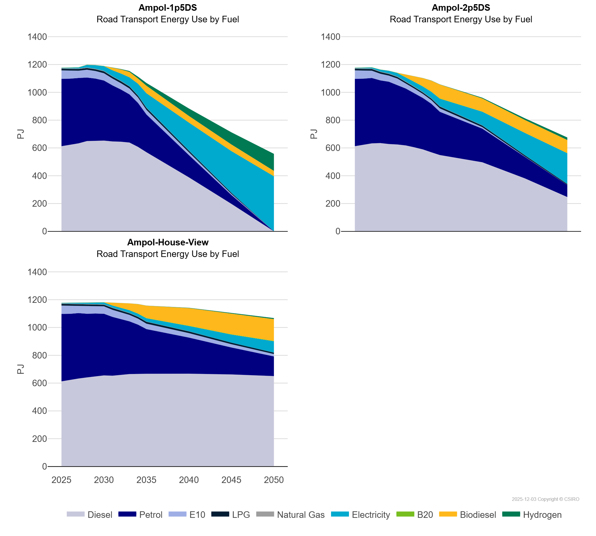
Figure: Road transport final energy demand by fuel, highlighting rapid electrification and biofuel uptake in the transition scenarios compared with the relatively stable liquid fuel use in the Ampol-House-View.
The evolution of vehicle technologies underpins these energy outcomes. In the Ampol-1p5DS, new vehicle sales shift rapidly from internal combustion engines towards long‑range and autonomous electric vehicles, with combustion engine sales almost eliminated by the early 2040s. The Ampol-2p5DS shows a slower but still pronounced transition, while the Ampol-House-View maintains a substantial share of combustion engine sales through to 2050. This dynamic is reflected in the in‑use vehicle stock: by 2050, the Ampol-1p5DS fleet is dominated by electric drivetrains, whereas internal combustion vehicles retain a much larger share in the Ampol-2p5DS and especially in the Ampol-House-View, sustaining higher liquid fuel demand.
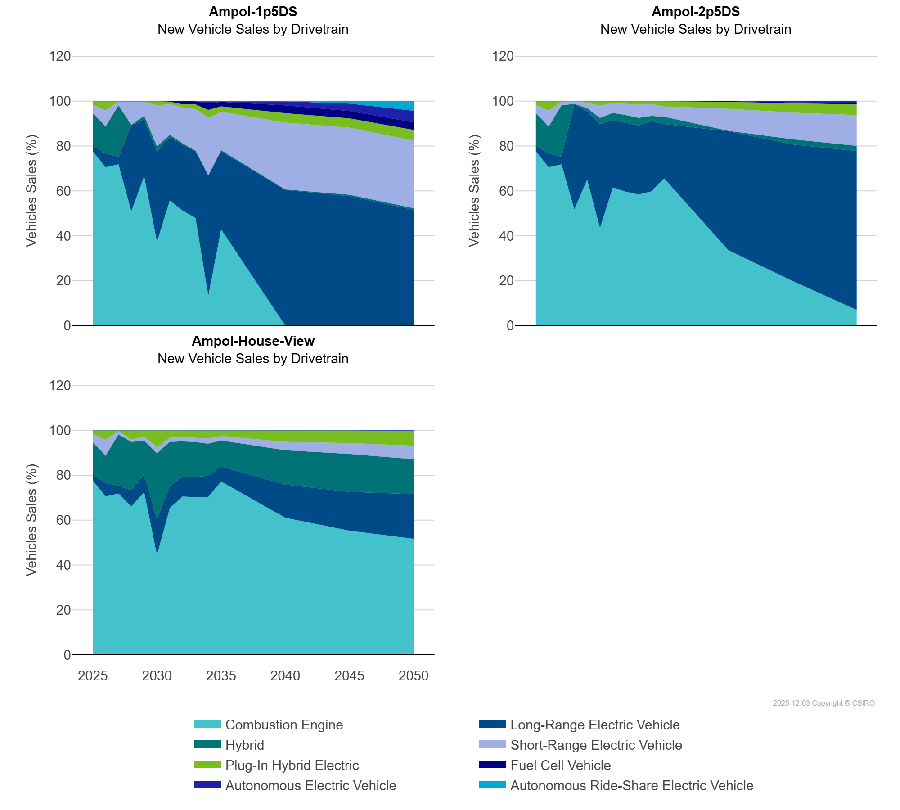
Figure: Composition of new light road vehicle sales by drivetrain, showing the pace and extent of electrification and the residual role of combustion drivetrains across scenarios.

Figure: Road vehicle stock by drivetrain, illustrating how differing sales trajectories translate into the gradual turnover of the fleet and long‑term energy demand patterns.
These shifts in energy use and technology translate into markedly different emissions profiles (see Emissions section). In the Ampol-1p5DS, domestic transport emissions fall from 98.1 Mt CO₂‑e in 2025 to just 4.0 Mt CO₂‑e in 2050, a 95.9% reduction. The Ampol-2p5DS achieves a 55.7% cut to 43.4 Mt CO₂‑e, while the Ampol-House-View only reduces emissions to 77.1 Mt CO₂‑e (‑21.4%), 73.1 Mt CO₂‑e higher than the Ampol-1p5DS in 2050. Road passenger and freight modes account for most of the reductions in the transition scenarios, with aviation and shipping decarbonising more gradually and relying more heavily on efficiency and low‑carbon fuels.
Figure: Domestic transport emissions by subsector, demonstrating how reductions in road fuel use and electrification of the vehicle fleet drive deep emissions cuts in the Ampol-1p5DS and, to a lesser extent, in the Ampol-2p5DS relative to the Ampol-House-View.
Industry
Industry energy demand declines across all scenarios, while emissions fall more rapidly as fuel switching, efficiency and carbon capture are deployed. Total industrial final energy use falls from 1,555 PJ in 2025 to 1,179 PJ in 2050 in Ampol-1p5DS (−24.2%) and to 1,089 PJ in Ampol-2p5DS (−30.0%), with a similar reduction in the Ampol-House-View to 1,164 PJ (−25.2%). These reductions are driven primarily by lower use of fossil fuels, particularly natural gas and coal, partially offset by higher electricity consumption and emerging contributions from hydrogen, electrification technologies and biomethane by 2050. Under the more stringent Ampol-1p5DS, total energy use remains around 90 PJ higher than in Ampol-2p5DS in 2050, reflecting higher assumed output in some energy‑intensive segments despite stronger decarbonisation.
Figure: Projected industrial final energy use by fuel from 2025 to 2050 under each scenario, showing declining fossil fuel demand and modest growth in low‑emissions energy carriers.
Emissions from industry fall faster than energy demand, indicating a systematic shift in the emissions intensity of production. Aggregate industry emissions decline from 146.8 Mt CO₂‑e in 2025 to 37.0 Mt CO₂‑e in 2050 in Ampol-1p5DS (−74.8%) and to 49.8 Mt CO₂‑e in Ampol-2p5DS (−66.1%). In contrast, emissions in the Ampol-House-View fall to 74.4 Mt CO₂‑e (−49.3%), leaving net emissions 37.4 Mt CO₂‑e higher than in Ampol-1p5DS by 2050. The gap between energy and emissions trajectories reflects both fuel substitution away from coal and gas, as seen in the energy mix, and the gradual deployment of carbon capture in selected processes.
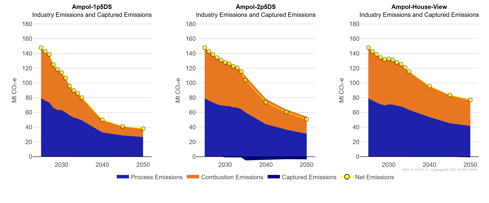
Figure: Total industrial combustion and process emissions, together with captured emissions, by scenario.
Within industry, iron and steel demonstrates the strongest divergence between pathways. In Ampol-1p5DS, iron and steel energy use rises from 98.7 PJ in 2025 to 166.1 PJ by 2050 (+68.3%), driven by growth in output and a transition away from coal towards electricity, natural gas and an emerging role for hydrogen in the late 2040s. By contrast, Ampol-2p5DS sees total energy use fall to 28.5 PJ (−71.1%), reflecting greater structural change and lower production, with coal use largely phased out but only limited uptake of alternative fuels. The Ampol-House-View shows a moderate decline in energy demand to 68.9 PJ (−30.2%), with a gradual reduction in coal but slower adoption of low‑emissions steelmaking routes than in Ampol-1p5DS.
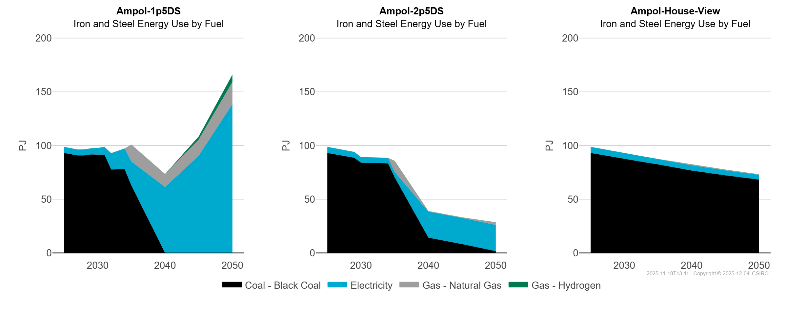
Figure: Iron and steel sector energy demand by fuel, illustrating contrasting decarbonisation and activity assumptions across scenarios.
Manufacturing emissions also decline materially but with differing pace across scenarios. Total manufacturing emissions fall from 61.0 Mt CO₂‑e in 2025 to 24.6 Mt CO₂‑e in 2050 in Ampol-1p5DS (−59.7%), and to 31.3 Mt CO₂‑e (−48.7%) in Ampol-2p5DS. Under the Ampol-House-View, emissions remain higher at 51.0 Mt CO₂‑e (−16.4%), around 26.4 Mt CO₂‑e above Ampol-1p5DS in 2050. Reductions are broad‑based across iron and steel, alumina, cement, aluminium and other energy‑intensive subsectors, with deeper cuts in the 1.5°C‑aligned pathway consistent with more aggressive fuel switching and process innovation.
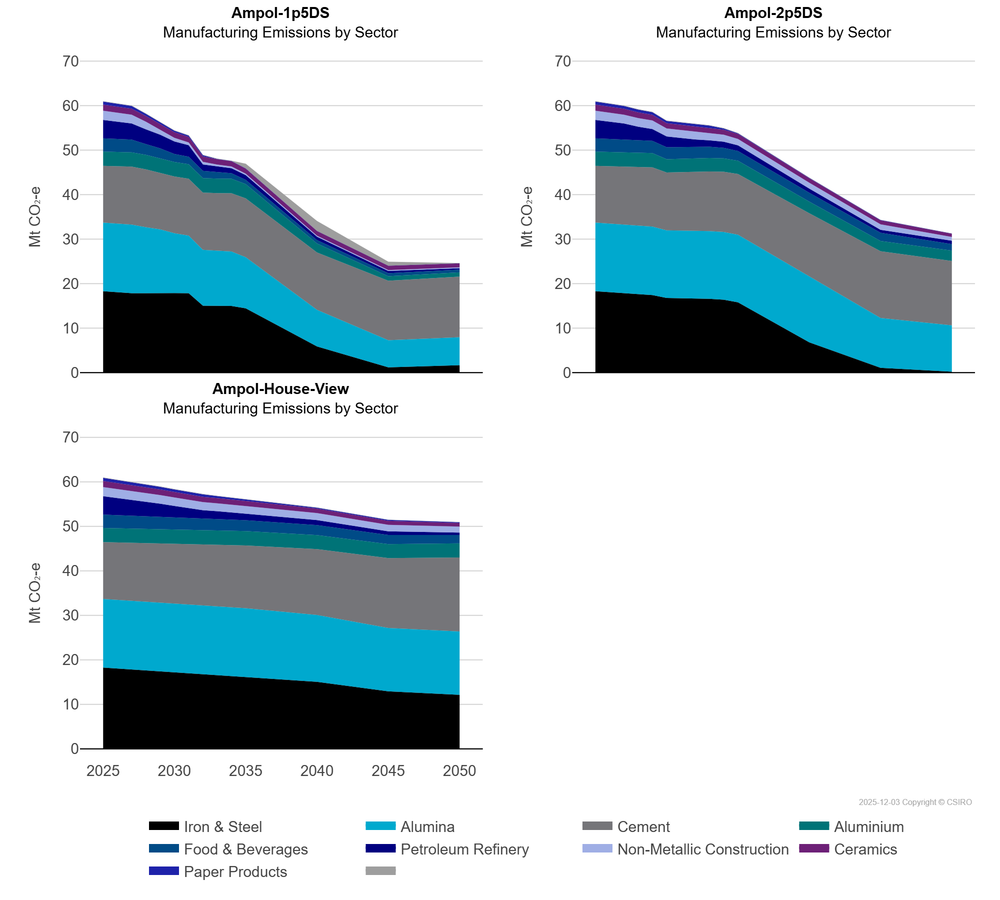
Figure: Manufacturing process and combustion emissions by subsector, 2025–2050, under each scenario.
Carbon capture plays a targeted but scenario‑dependent role, particularly in chemicals. In chemical production, captured emissions are negligible in Ampol-1p5DS and the Ampol-House-View by 2050, but reach around 1.0 Mt CO₂‑e in Ampol-2p5DS, where processes such as methanol and urea production adopt carbon capture and storage (CCS) earlier or at larger scale. This contributes to lower net emissions in that subsector relative to the baseline, though overall industry abatement remains highest in Ampol-1p5DS due to broader fuel and technology shifts.
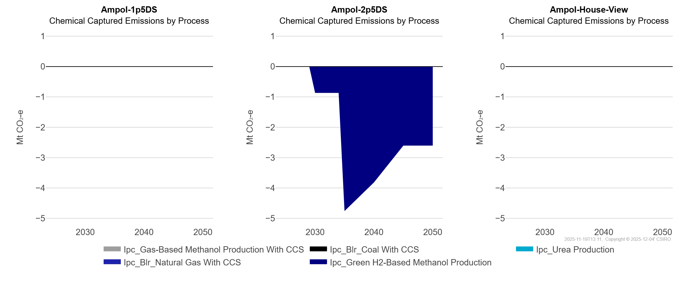
Figure: Captured emissions from key chemical processes, highlighting the additional CCS deployment in the Ampol-2p5DS scenario.
Residential
Residential energy use remains relatively stable over the projection period, with only modest changes in total final demand but a marked shift in the fuel mix. Across all scenarios, residential buildings consume around 509 PJ in 2025. By 2050 this falls slightly to 482.7 PJ in Ampol-1p5DS (1.5°C‑aligned pathway), 482.0 PJ in Ampol-2p5DS (2.5°C pathway) and 481.1 PJ in Ampol-House-View (reference/baseline scenario), equivalent to reductions of 5.1–5.5%. The narrow spread between scenarios in 2050 (Ampol-1p5DS is only 1.6 PJ above Ampol-House-View) indicates that efficiency improvements and electrification largely offset demand growth from a larger dwelling stock in all cases.
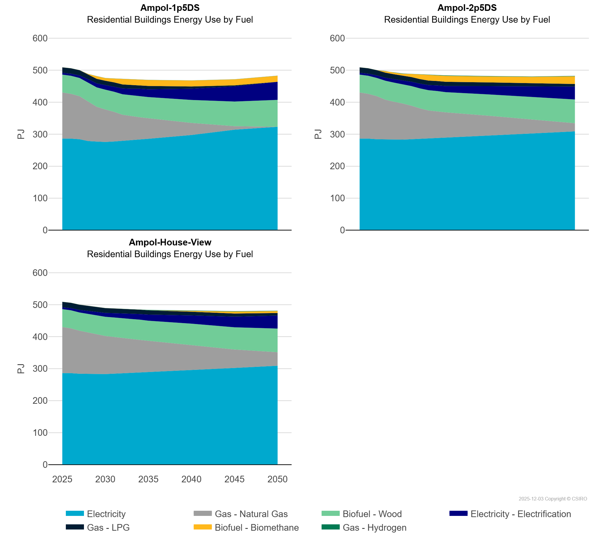
Figure: Projected residential final energy use by fuel, showing relatively flat total demand but a progressive shift from natural gas and LPG to electricity and low‑emissions gases across all scenarios.
The composition of residential energy use changes more substantially than the total volume. Electricity (including additional demand from electrification of end uses) becomes increasingly dominant over time, while fossil gas use declines. Natural gas falls sharply in all scenarios, with a partial replacement by biomethane and hydrogen, particularly under Ampol-1p5DS. Solid biofuels (wood) and LPG remain minor contributors throughout. The stronger electrification and fuel switching in Ampol-1p5DS drive slightly higher electricity consumption but materially lower direct fossil fuel use relative to the other scenarios.
These shifts translate into pronounced reductions in residential emissions as part of the broader built environment. Sector-wide emissions fall from 14.25 Mt CO₂‑e in 2025 to zero by 2050 in Ampol-1p5DS, implying full decarbonisation of both residential and commercial buildings. Under Ampol-2p5DS, built environment emissions decline by 49.3% to 7.22 Mt CO₂‑e in 2050, while in Ampol-House-View they fall by 34.6% to 9.32 Mt CO₂‑e. The gap between Ampol-1p5DS and the reference/baseline scenario in 2050 (9.3 Mt CO₂‑e) highlights the additional abatement potential from deeper residential efficiency, fuel switching and grid decarbonisation measures.
Figure: Built environment emissions (residential and commercial), illustrating rapid emissions decline and full decarbonisation by 2050 in Ampol-1p5DS, with more moderate reductions in Ampol-2p5DS and Ampol-House-View.
Residential energy outcomes are achieved despite continued growth in dwelling stock and floor area. Residential building production increases steadily from 2025 to 2050, indicating an expanding housing base that would, in the absence of efficiency gains, drive higher energy use. The projections therefore imply substantial improvements in building fabric performance, appliance efficiency and electrification of end uses, which collectively stabilise total residential energy demand while enabling deep emissions reductions.
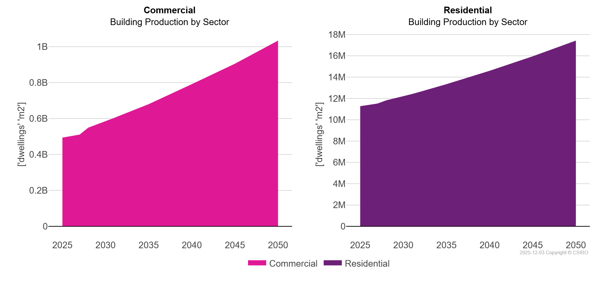
Figure: Projected building production by sector, showing sustained growth in residential floor area and dwelling numbers alongside expansion in the commercial building stock.
Commercial
Commercial energy demand is projected to grow steadily across all scenarios, driven by sustained expansion in commercial floor space. Total commercial buildings energy use rises from 276.5 PJ in 2025 to between 371.5 PJ (Ampol-2p5DS) and 421.4 PJ (Ampol-1p5DS) by 2050, an increase of 34–52%. The reference/baseline Ampol-House-View scenario reaches 379.9 PJ by 2050, sitting between the two decarbonisation pathways. The higher 2050 consumption in the 1.5°C‑aligned pathway (about 50 PJ above the 2.5°C pathway) reflects stronger electrification and associated conversion losses, alongside higher service demand, rather than weaker efficiency.
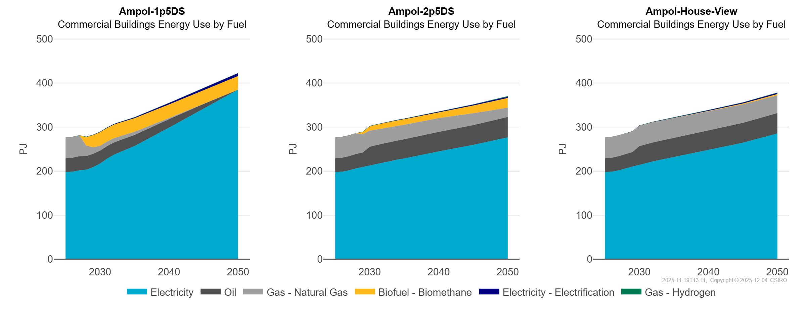
Figure: Projected final energy consumption in commercial buildings by fuel and scenario, 2025–2050.
Across all scenarios, electricity remains the dominant energy carrier in commercial buildings and increases its share over time, while direct use of oil and natural gas either declines or grows only modestly. In the Ampol-1p5DS pathway, the growth in electricity is supplemented by emerging low‑emissions options such as biomethane and hydrogen, which begin to displace fossil gas in the later years of the outlook. This shift in the fuel mix underpins the sector’s emissions reductions even as absolute energy use grows.
The growth in energy demand is closely linked to the expansion of the commercial building stock. Commercial floor area nearly doubles over the projection period, rising from around 0.5 billion m² in 2025 to just over 1.0 billion m² by 2050, significantly increasing the demand for heating, cooling, lighting and equipment services in the sector.
Figure: Projected commercial and residential building production (new floor area and dwellings), 2025–2050.
Despite rising commercial energy use, built environment emissions fall markedly, illustrating strong decoupling between activity and emissions intensity. Total built environment emissions (commercial plus residential) drop from 14.25 Mt CO₂‑e in 2025 to zero by 2050 in Ampol-1p5DS, and to 7.22 Mt CO₂‑e in Ampol-2p5DS (a 49% reduction). Under Ampol-House-View, residual emissions remain higher at 9.32 Mt CO₂‑e in 2050, around 9.3 Mt CO₂‑e above the 1.5°C‑aligned pathway. Within this total, the commercial sector remains a significant contributor, so faster electrification and fuel switching away from fossil fuels in commercial buildings are critical to achieving the deeper emissions reductions seen in the 1.5°C‑aligned pathway.
Figure: Projected operational emissions from the built environment (commercial and residential combined) under each scenario, 2025–2050.
Agriculture
Agricultural energy demand remains relatively stable over the projection period, with modest reductions in total final energy alongside a shift in the fuel mix. Across all scenarios, sectoral energy use starts at 107.69 PJ in 2025. In the Ampol-1p5DS (1.5°C-aligned pathway), total agriculture energy use declines by 17.6% to 88.75 PJ by 2050, reflecting stronger efficiency gains and fuel switching. Under the Ampol-2p5DS (2.5°C pathway), energy use falls more gradually to 99.56 PJ (‑7.5%), while in the Ampol-House-View (reference/baseline scenario) it remains broadly flat, reaching 101.1 PJ in 2050 (‑6.1%). By 2050, the reference pathway therefore uses 12.3 PJ more energy than the 1.5°C-aligned pathway.
The composition of agricultural energy demand diverges markedly between scenarios. In Ampol-1p5DS, diesel use falls sharply over the outlook, with electricity and a small but growing contribution from biofuels/biomethane displacing liquid fuels in on-farm machinery and stationary uses. In contrast, Ampol-2.5DS and Ampol-House-View preserve a higher share of diesel, with only moderate electrification and limited uptake of low‑emissions gaseous fuels. Natural gas remains a minor contributor in all scenarios, primarily for specialised stationary applications. These trends are consistent with the broader sectoral patterns of electrification and fuel substitution discussed elsewhere in this report.
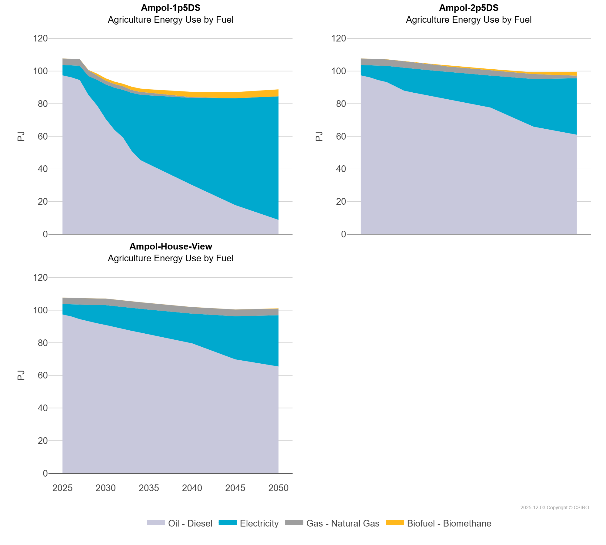
Figure: Projected agriculture final energy use by fuel and scenario, 2025–2050 (PJ). The 1.5°C-aligned pathway shows the strongest overall reduction and the most pronounced shift away from diesel towards electricity and low‑emissions fuels.
When energy and non‑energy sources of emissions are combined with land use and forestry, agriculture’s net climate impact varies substantially between pathways. In 2025, net agriculture and land use emissions are 9.49 Mt CO₂‑e across all scenarios. By 2050, both transition pathways transform the sector into a substantial net sink: ‑70.26 Mt CO₂‑e in Ampol‑1p5DS and ‑91.57 Mt CO₂‑e in Ampol‑2.5DS. These large percentage reductions (‑840% and ‑1,065% respectively) are driven by a combination of reduced methane and nitrous oxide from livestock and soils, and significant carbon sequestration from forestry and land-use change that more than offsets residual emissions. In contrast, under Ampol‑House‑View, net agriculture and land use emissions rise to 43.06 Mt CO₂‑e by 2050, ending 134.6 Mt CO₂‑e higher than the Ampol‑2.5DS pathway, highlighting the central role of land-sector policy and practice in achieving economy‑wide decarbonisation.
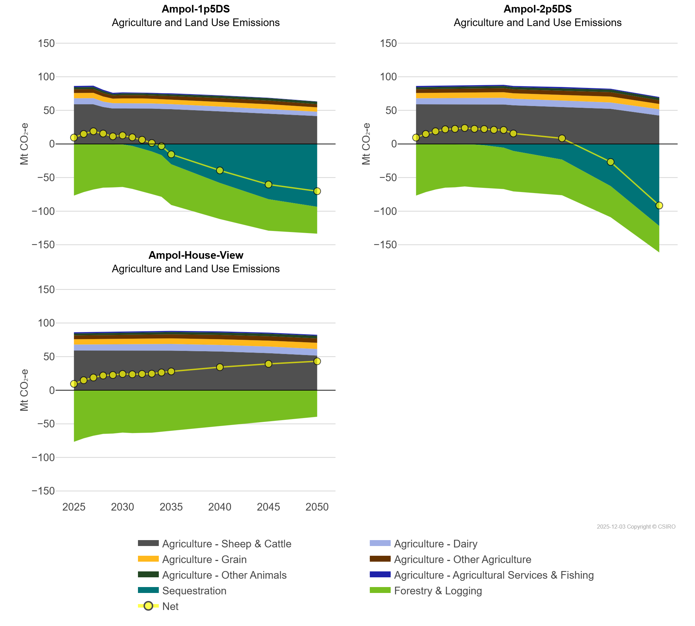
Figure: Net agriculture and land use emissions by sub‑sector and scenario, 2025–2050 (Mt CO₂‑e). Negative values indicate net removals from forestry and land-based sequestration exceeding gross agricultural emissions.
Achieving these deep reductions relies heavily on process‑level abatement rather than energy demand alone. By 2050, total modelled abatement from agriculture processes reaches ‑24.99 Mt CO₂‑e in Ampol‑1p5DS and ‑22.11 Mt CO₂‑e in Ampol‑2.5DS, compared with ‑9.93 Mt CO₂‑e in Ampol‑House‑View. The dominant levers across the transition pathways are methane mitigation measures in sheep and cattle enterprises, complemented by targeted methane reduction in dairy and improved non‑energy emissions intensity through precision and digital agriculture. These measures, together with land-use and forestry dynamics, underpin the strong decoupling of agricultural output from emissions in the transition scenarios, even as the sector’s final energy consumption declines only moderately.

Figure: Cumulative agriculture abatement by process and scenario, 2025–2050 (Mt CO₂‑e). Methane mitigation in livestock and precision agriculture drive the majority of emissions reductions, particularly in the transition pathways.